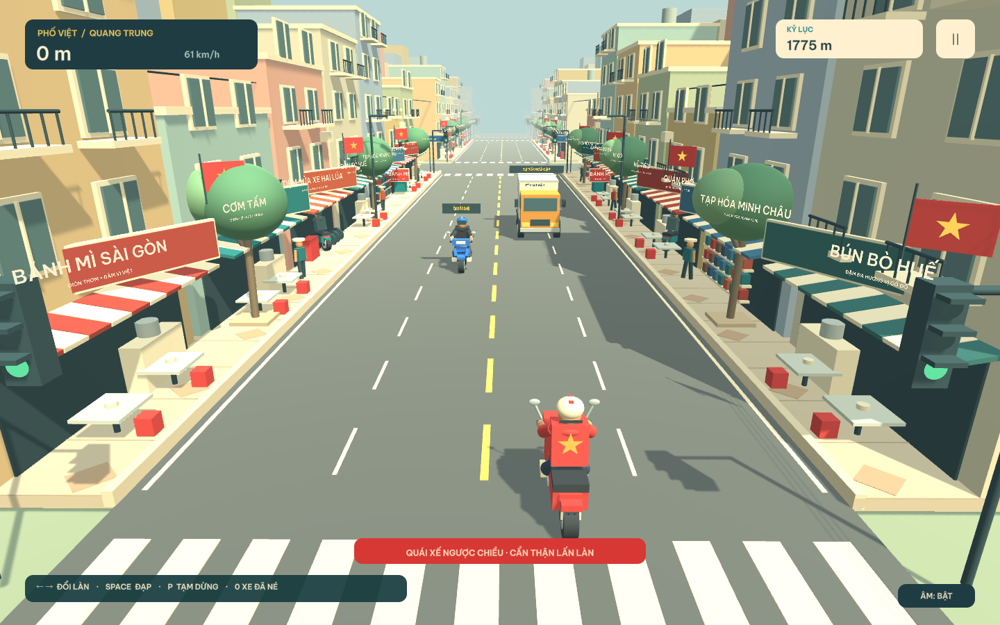

MỘT VÒNG VIỆT NAM · GAME 3D VÔ TẬN
Áo đỏ sao vàng, một chiếc xe máy và những con đường không bao giờ ngủ. Bạn sẽ đi được bao xa?
Chơi miễn phí · Máy tính & điện thoại
Vuốt ngang: đổi làn / chọn rẽ · vuốt lên: nhảy · vuốt xuống: tăng tốc · chạm hai lần: đạp.

CHÀO MỪNG ĐẾN PHỐ VIỆT
Máy tính: ← → hoặc A / D đổi làn. SpaceBar ngóc bánh và nhảy. W tăng tốc. Q đạp xe máy ở cạnh. P / Esc tạm dừng. R chơi lại.
Điện thoại: vuốt trái/phải để đổi làn. Vuốt từ dưới lên để nhảy, từ trên xuống để tăng tốc. Chạm hai lần trong vùng chơi để đạp.
Tăng tốc: nhanh hơn 125% trong 4 giây, khói trắng phụt sau xe. Hồi chiêu 2 giây sau khi kết thúc; không cộng dồn. Bị té hoặc dừng đón/trả khách sẽ hủy tăng tốc và bắt đầu hồi chiêu. Xe vẫn tự giảm tốc để nhường và dừng đúng điểm hẹn.
Nhảy xe: hồi chiêu 2 giây, chỉ thực hiện từ mặt đường hoặc nóc xe. Có thể vượt xe máy đã ngã, đáp và chạy trên ô tô con hoặc xe giao hàng nhỏ; chạy vượt mép nóc sẽ rơi xuống đường. Xe tải thùng cỡ trung vẫn là chướng ngại. Va vào thân xe vẫn mất 1 mạng.
Rẽ sang phố mới: ở vùng mũi tên trước giao lộ, bấm/vuốt đúng hướng để chọn rẽ: hai làn bên trái rẽ trái, hai làn bên phải rẽ phải. Ngay trong lòng giao lộ vẫn có thể rẽ: ở hai làn trái bấm/vuốt trái, ở hai làn phải bấm/vuốt phải, không cần chọn trước. Xe giữ nguyên vị trí làn sau cua. Chú ý xe vượt lên từ phía sau và xe ngược chiều trên phố mới. Hai làn giữa vẫn có thể đi thẳng; ngoài vùng rẽ thao tác đổi làn giữ như thường.
Né xe phanh gấp, tạt làn và xe rẽ ở giao lộ. Đạp quái xế là tự vệ; đạp xe thường sẽ bị CSGT truy đuổi.
Va chạm: hướng té và quãng văng tùy lực va chạm. Khi xe trượt và té xong, chuyến đi kết thúc. Nếu đang bị CSGT truy đuổi, người chơi nằm lại; cảnh sát dựng xe hoặc né vật cản rồi đến bắt và chuyển sang cảnh trong tù.
Android / Chrome / Edge: chọn “Cài ứng dụng” hoặc mục cài đặt trong menu trình duyệt.
iPhone / iPad: mở bằng Safari → Chia sẻ → Thêm vào Màn hình chính → bật “Mở dưới dạng ứng dụng web” nếu có → Thêm.
Lần đầu cần mạng để tải game. Khi thông báo “Đã lưu để chơi offline” xuất hiện, bạn có thể mở lại trên máy này khi mất mạng.